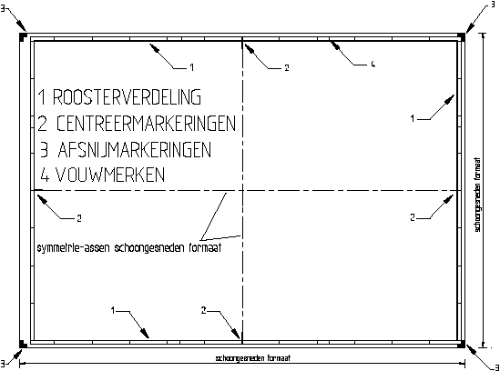

In de rand van de tekening de onderstaande markeringen aanbrengen:

De roosterverdeling bestaat uit velden en wordt begrenst door het kader en een lijn 5 mm buiten het kader. De lengte van de velden is 50 mm, te beginnen bij de symmetrie-assen van het schoongesneden formaat (centreermarkeringen).
De lijndikte van de roosterverdeling bedraagt 0,25 mm.
Het toepassen van de roosterverdeling is optioneel.
Centreermarkeringen geven het midden van de tekening aan.
Bij alle formaten met uitzondering van A4 en A4 liggend beginnen deze markeringen bij de buitenkant van de roosterverdeling en eindigen 5mm voorbij het kader in de tekenruimte.
Bij de formaten A4 en A4 liggend beginnen centreermerken bij de buitenkant van de roosterverdeling en eindigen op het kader.
Centreermarkeringen staan op de symmetrie-assen van het schoongesneden formaat.
Centreermarkeringen hebben een lijndikte van 0,70 mm.
Afsnijmarkeringen geven aan waar de tekeningen afgesneden moet worden, om daarna het juiste formaat te krijgen.
Afsnijmarkeringen staan op de vier hoeken van het schoongesneden formaat en hebben de vorm van twee elkaar gedeeltelijk overlappende rechthoeken met de afmetingen van 10 mm x 5 mm.
Het toepassen van de afsnijmarkeringen is optioneel.
Vouwmerken geven aan waar de tekeningen gevouwen moeten worden, om uiteindelijk het A4 formaat te krijgen.
Vouwmerken staan in de rand en worden aangegeven met een lijn van 5 mm.
De verdeling van de vouwmerken is in een patroon geplaatst met een onderlinge vertikale afstand van 297 mm en een onderlinge horizontale afstand van 210 mm. De verdeling wordt gerekend vanuit de rechter onderhoek van de tekening.
Wordt een roosterverdeling toegepast dan worden de vouwmerken aangegeven met een lijn van 5 mm met een gesloten pijlpunt.
Vouwmerken hebben een lijndikte van 0.18 mm.
Het toepassen van de vouwmerken is optioneel.